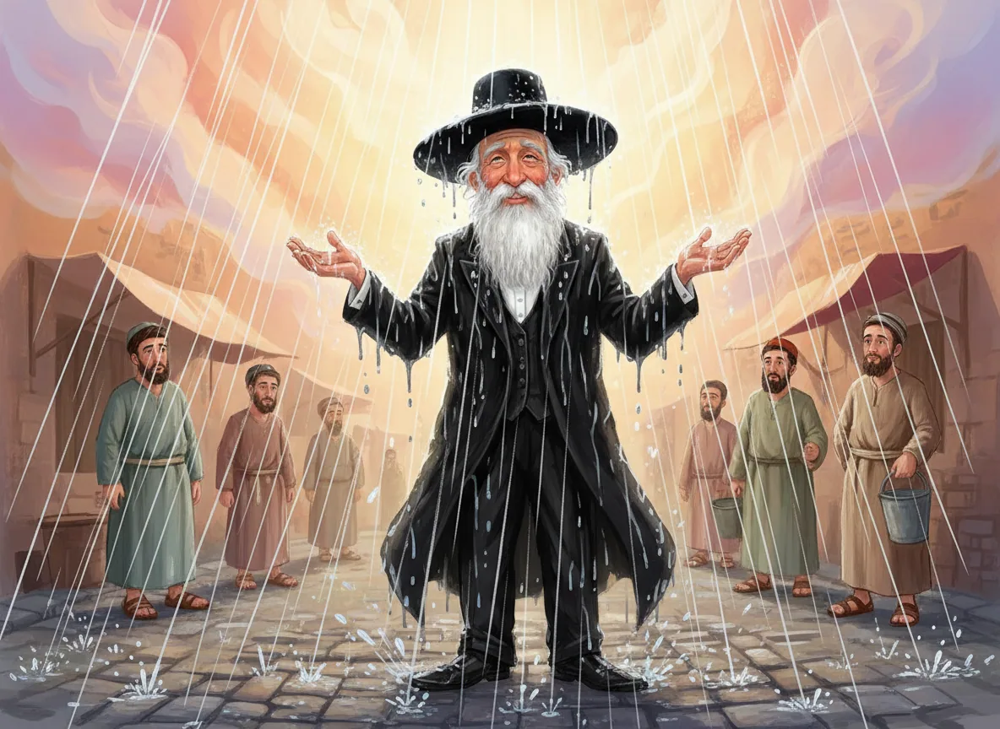

משחק למידה לחצו כאן

דף למידה ניתן להוריד מכאן
מצגת על דיני שאלת גשמים
לחצו כאן
https://gamma.app/docs/-sabsfet3b4r23es?mode=present#card-7ls6gvaa1zepmwq
שאילת הגשמים - דף למידה
📖 הגדרת המושגים
גבורות גשמים - הזכרת גבורות ה' "משיב הרוח ומוריד הגשם"
מתחילים: משמיני עצרת (תהילה בלבד, ללא בקשה)שאילת גשמים - בקשה ממשית למטר "ותן טל ומטר על פני האדמה"
מקומה: ברכת השנים (ברכה תשיעית בשמונה עשרה)
📅 זמני התחלה וסיום
בארץ ישראל:
- התחלה: מליל ז' חשוון בערבית
- סיום: תפילת מנחה ערב יום טוב ראשון של פסח
בחוץ לארץ:
- התחלה: ליל 60 יום אחר תקופת תשרי (בדר"כ 4/5 דצמבר)
- סיום: כמו בארץ (מנחה ערב פסח)
🤔 למה דווקא ז' חשוון?
הסיבה המקורית:
כדי שיגיע האחרון שבישראל לנהר פרת - עולי הרגלים שעלו לסוכות צריכים זמן להגיע לביתם (המרחק הכי רחוק מירושלים). התקנה נשארה גם לאחר החורבן!
למה ממשיכים לשאול עד פסח?
בניגוד לתחילה - לא מפסיקים לשאול שבועיים לפני פסח כדי לא להפריע לעולי הרגלים. למה?4 הסברים:
- בגדי חורף - בסוכות לבושים קיץ, בפסח מצוידים לחורף (הגרש"ז אויערבך)
- שפע וברכה - אין מפסיקים ברכה שכבר התחילה, אבל דוחים התחלה (הגריש"א)
- "בבית אלקים נהלך ברגש" - ברד, רוח, גשם, שלג = כשהולכים לבית ה' אפשר בגשם, בחזרה קשה יותר (הגרח"ק)
- שלוחי מצווה - בהליכה לא ניזוקים, בחזרה אין הגנה (פסחים ח,ב)
🌙 למה מתחילים בלילה?
בניגוד ל"משיב הרוח" שמתחילים ביום!
3 טעמים:
א. ממילא יש "אגודות אגודות" - חו"ל מתחילים במועד אחר (מג"א)ב. אין הבדל בין ערבית לשחרית בימי חול - אז למה לא מערבית? (קרבן נתנאל)ג. בשאלה לא נוגע "שיצאו המועדות בטל" - רק בהזכרה (ירושלמי)
📢 האם מכריזים "ותן טל ומטר"?
שתי דעות:
✅ יש אומרים: השמש יכריז אחרי קדיש, לפני שמו"ע
(דרך החיים - כדי שידעו, ולא חשיב הפסק)❌ יש אומרים: אין להכריז - חשש הפסק
(שו"ע הרב, חזו"א)ביחיד: מחלוקת אם מותר להכריז לעצמו בקול
⚠️ טעה ושאל בין שמע"צ לז' חשוון - מה הדין?
מחלוקת חשובה:
לא חוזר 🔄❌
- זה זמן גשמים
- התקנה הייתה רק בזמן המקדש
- אין עולי רגלים היום (הגרש"ז אויערבך, הגריש"א)
חוזר 🔄✅
- התקנה בתוקף - "יגיע לנהר פרת"
- חשיב "שינוי ממטבע שטבעו חכמים" (חזו"א, הגרח"ק)
💡 נקודות מיוחדות
🌍 חו"ל מאחרים - מקומות נמוכים, צריכים פחות מים📆 60 יום מהתקופה - חישוב אסטרונומי מדויק🎯 עד מנחה של ערב פסח - לא עד הלילה!
📚 מקורות עיקריים
- גמרא תענית י, א-ב
- שולחן עורך אורח חיים סימן קיז
- משנה ברורה שם
- ירושלמי תענית פ"א
🎓 לזכור:
"ותן טל ומטר על פני האדמה" - לא סתם תפילה, אלא בקשה מדויקת לגשמים בזמנם, במידה הנכונה, למען פרנסה וברכה! 🌧️